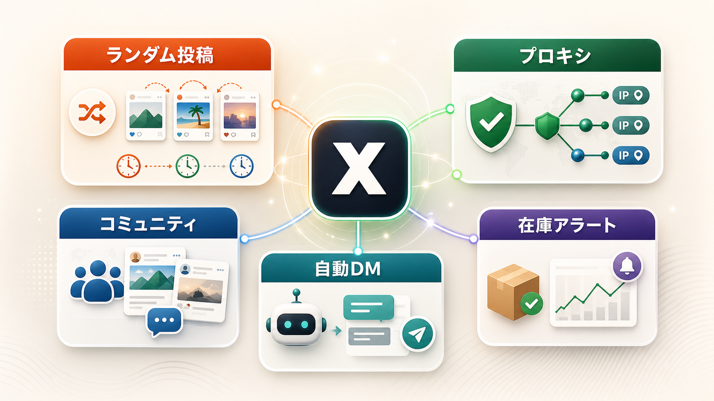
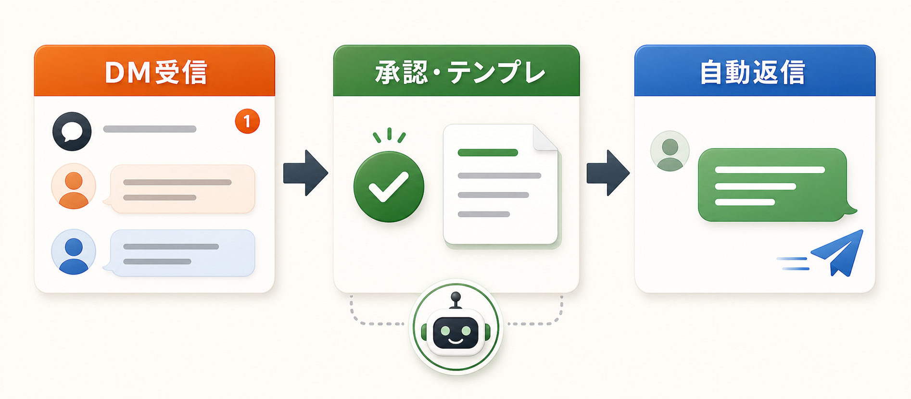
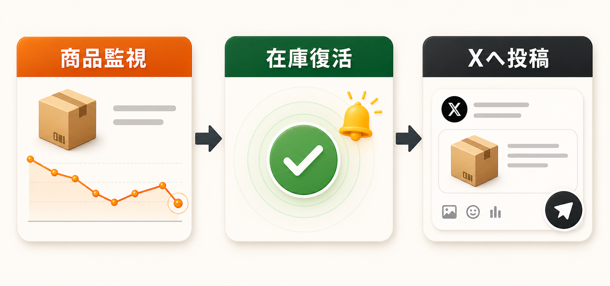

API料金を気にしない
ブラウザ自動化で動くため、X APIの申請や高額なAPI課金を避けられます。
API不要 / 買い切り / 無料版あり
XToolsPro3は、IDとパスワードだけで始められるX(Twitter)自動投稿ツールです。 ランダム投稿、複数アカウント、プロキシ、自動DMまでまとめて管理できます。

Problems
ブラウザ自動化で動くため、X APIの申請や高額なAPI課金を避けられます。
100件プールからランダムに選び、時間もずらして機械的な投稿感を抑えます。
アカウント別プロキシで、同一IPによる連鎖凍結リスクを分散します。
Reasons
長く使う自動化ツールだから、導入しやすさ・投稿の自然さ・料金の分かりやすさを重視しました。
X APIの申請や高額なAPI課金なし。IDとパスワードでブラウザ操作を自動化します。
投稿文と画像をプール化し、順番や時刻をずらして機械的な運用感を抑えます。
月額ではなく買い切り。必要な機能だけ後からアドオンで追加できます。
Features
ランダム投稿
投稿文と画像をプール化し、重複を避けながら自然な間隔で配信します。

プロキシ
IPRoyalなどの情報を貼るだけ。複数アカウント運用の守りを作れます。

コミュニティ投稿
タイムラインを汚さず、狙ったコミュニティだけへ自然に配信できます。

自動DM
DM受信、承認、テンプレ返信をシンプルな流れで自動化できます。

Amazon在庫復活
Keepa連携で商品を監視し、復活したタイミングを逃さず投稿できます。

Basic
アドオンなしでも、X自動投稿の基本運用に必要な機能は使えます。
まずは基本版で十分
基本版は「毎日投稿する」「投稿文と画像を管理する」「時刻を決めて投稿する」ための最小セットです。
XのIDとパスワードを登録し、ブラウザ操作で投稿を自動化します。
投稿文と画像をまとめて管理し、手作業の投稿準備を減らせます。
決めた時刻に投稿し、日々の投稿忘れを防ぎます。
同じ順番・同じ時間に偏らない投稿運用ができます。
Add-ons
買い切り + アドオンには1つ同梱。運用が広がったら必要な機能だけ追加できます。
¥4,000
こんな人に: 投稿案づくりを短縮したい
投稿ネタの作成を補助し、毎日の準備時間を減らします。
追加する¥4,000
こんな人に: 反応を取りに行きたい
投稿後の反応を増やすための運用を補助します。
追加する¥5,000
こんな人に: 複数アカウントで回したい
アカウント数を増やして、運用の幅を広げます。
追加する¥4,000
こんな人に: 濃いユーザーへ届けたい
タイムラインではなく、狙ったコミュニティへ投稿します。
追加する¥6,000
こんな人に: 在庫復活を逃したくない
検知からX投稿までをつなげ、チャンスを逃しにくくします。
追加するCompare
| 項目 | 無料版 | 買い切り | フル買切り |
|---|---|---|---|
| 価格 | ¥0 | ¥2,980から | ¥19,800 |
| 定期投稿 | 対応 | 対応 | 対応 |
| ランダム投稿 | 一部制限 | 対応 | 対応 |
| 複数アカウント | 1つまで | 拡張可 | 対応 |
| アドオン | なし | 1つ同梱 + 追加可 | 全5種同梱 |
| サポート | なし | あり | あり |
Trust
個人の副業運用にも使いやすいよう、導入実績と開発背景を明確にしています。
開発・運用の背景
毎日の投稿作業を減らしながら、機械的に見えにくい運用へ寄せるためのツールです。価格、動作環境、アドオン範囲を明確にし、購入前の不安を減らします。
累計導入実績。
月額なしで継続しやすい料金設計。
動作環境を明確にしたうえで提供。
購入前に確認したい点は、お問い合わせフォームから相談できます。
Notes
Windows専用です。Mac / Linuxには対応していません。
プロキシを使う場合、別途プロキシサービスの契約が必要です。
24時間運用したい場合は、PCを起動したままにするかVPSをご利用ください。
FAQ
不要です。XのIDとパスワードを登録して、ブラウザ操作を自動化します。
Windows専用です。Mac / Linuxには対応していません。Windows 10以降のPCをご用意ください。
特段の制限はありません。登録自体は目安100アカウントまで可能ですが、1アカウントごとにChromeが1つ立ち上がるため、PC性能によっては処理落ちする場合があります。同時刻の投稿は10アカウント程度を目安にしてください。設定でアカウントごとの投稿時刻をずらすことも可能です。
Windows 10以降、メモリ4GB以上（推奨8GB）、空き容量1GB、インターネット接続が目安です。一般的なノートPCでも動作します。
プロキシを使う場合は、IPRoyalなどの外部サービス契約が別途必要です。目安は1アカウントあたり月額500〜800円ほどで、アカウントを守るための保険料として考えてください。
できます。無料版のデータ・設定はそのまま引き継げるため、再インストールなしで有料版へ移行できます。
追加できます。必要になったタイミングで好きなパックを足せます。最初から全部使う場合は、フル買い切り版（¥19,800）が単品合計より¥3,200お得です。
他にご質問があれば、お問い合わせフォームからご相談ください。